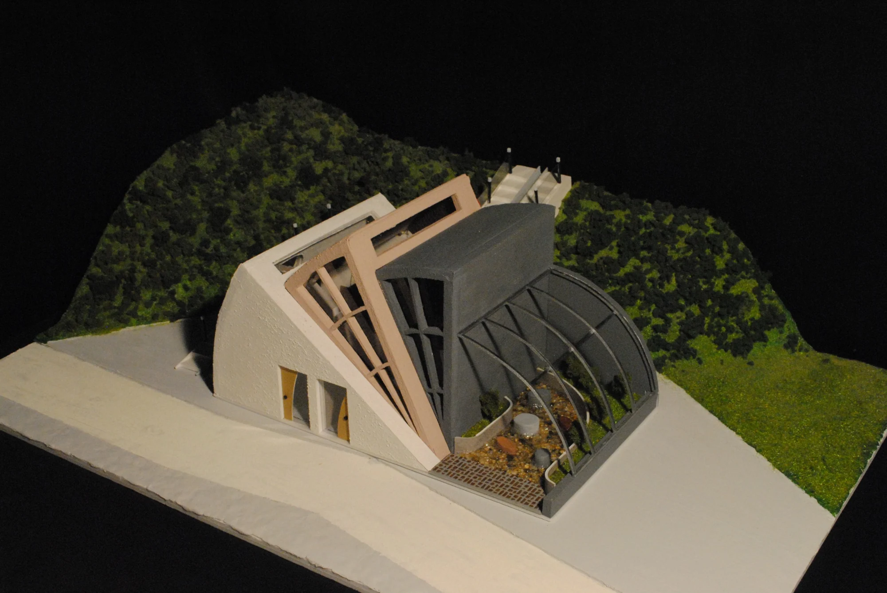

BETWEEN NATURE & REST
자연과 쉼터, 그 사이의 화장실
몽돌과 물의 흐름에서 출발한 공중화장실. 초도의 자연을 즐기고 잠시 머무는 마을의 쉼터를 제안했습니다.
- YEAR / SEMESTER
- 1학년 2학기 · 2021
- PROJECT TYPE
- 공중화장실 · 공공공간
- CONTRIBUTION
- 개인 설계
- SITE / SUBJECT
- 전라남도 여수시 삼산면 초도리

THE IDEA
생각의 출발점
초도 의성마을의 몽돌해변과 동태샘을 함께 바라보았습니다. 서로 다른 돌이 만나 둥글어지는 몽돌의 이미지에서 형태를 발전시키고, 화장실에 족욕 수공간과 쉼터를 결합했습니다.
- 01
장소의 발견
초도 답사와 대지 모형을 통해 해변, 마을길, 동태샘의 관계를 살폈습니다.
- 02
조화로운 몽돌
몽돌이 겹치는 형태를 컨셉 모형과 매스 모형으로 실험했습니다.
- 03
머무는 공공공간
자연광과 경관을 담는 창, 수로와 계단, 족욕 수공간을 함께 계획했습니다.
PROCESS & OUTCOME
과정과 결과
사진을 누르면 크게 볼 수 있습니다.